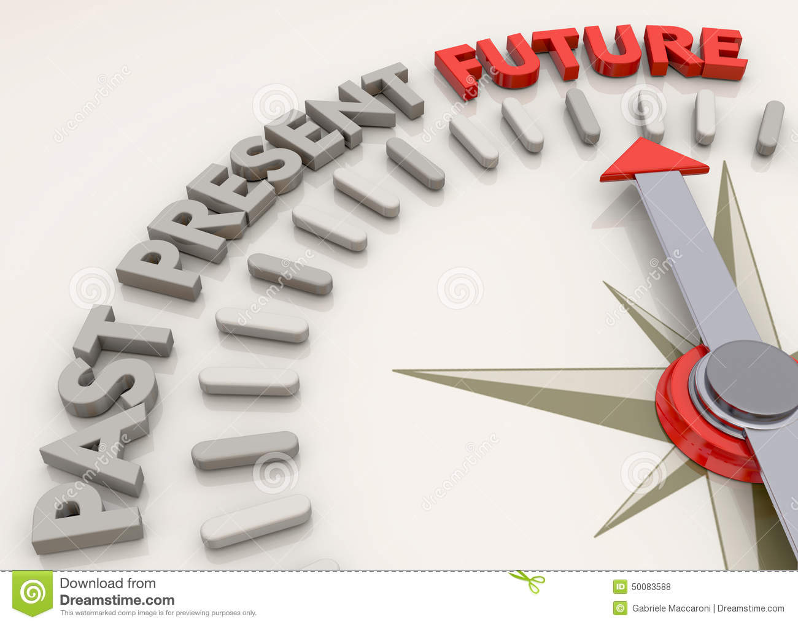

Sometimes we can loose focus on the big picture. Below you will find resources that you can turn to when your brain becomes foggy. Here's a video that explains how to keep a Future Oriented mindset.
Not feeling it yet? Let's take a look on how we can develope a Futurist Mindset.
Being future orietned has its advantages especially in the IT world. Having a goal, thinking about how you will execute it, and working towards it will always keep you on top of your game! Lets kick things up a notch shall we? Below is a link to a quiz to test your mindset. Take the quiz to learn yourself. Your results may surprise you!
Click here to take the quizThink about this process as a compass